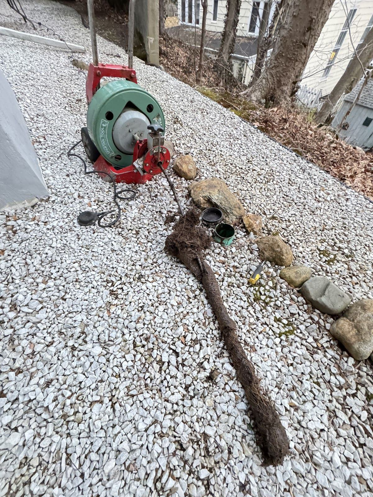
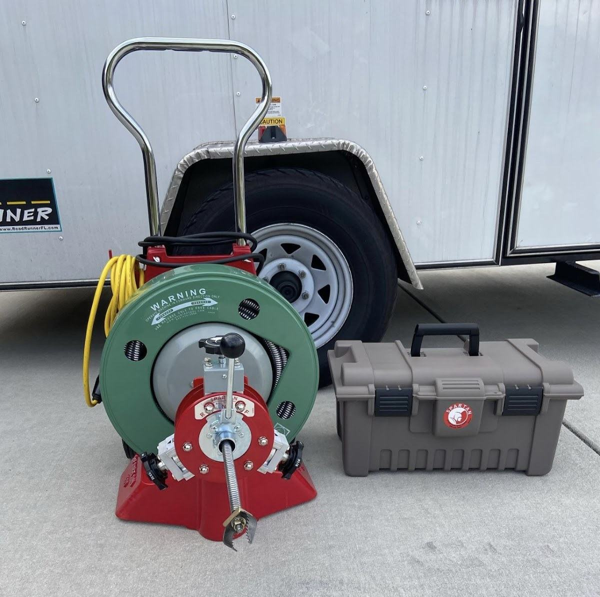
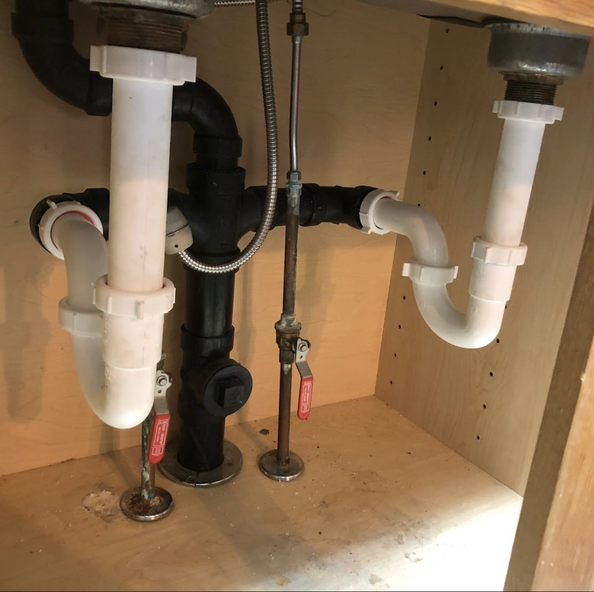
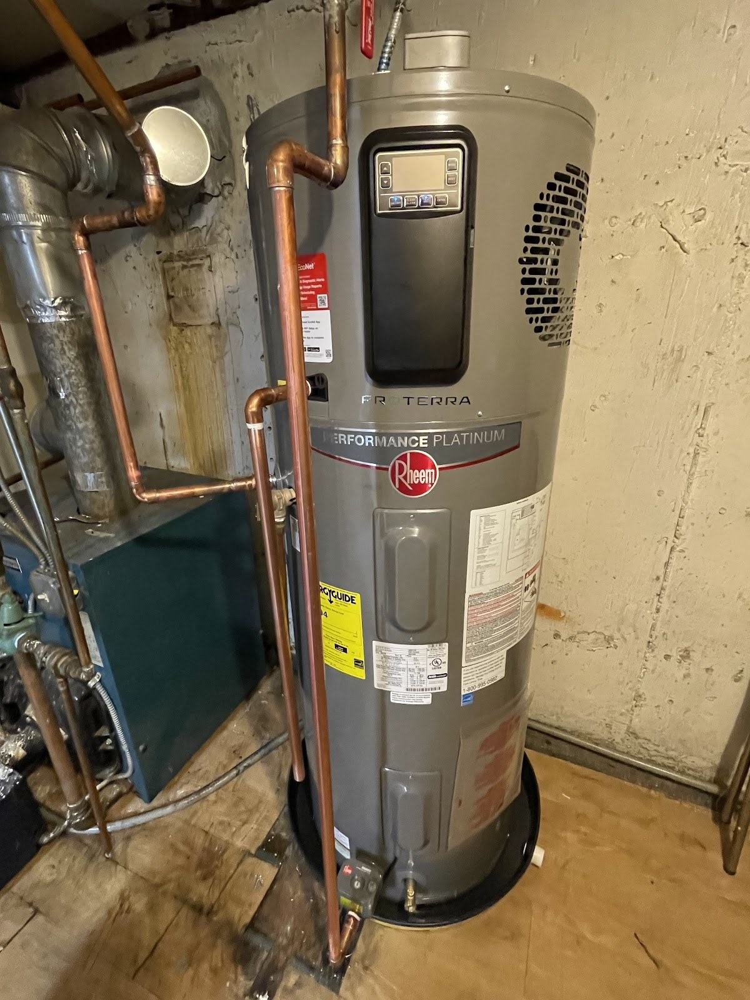
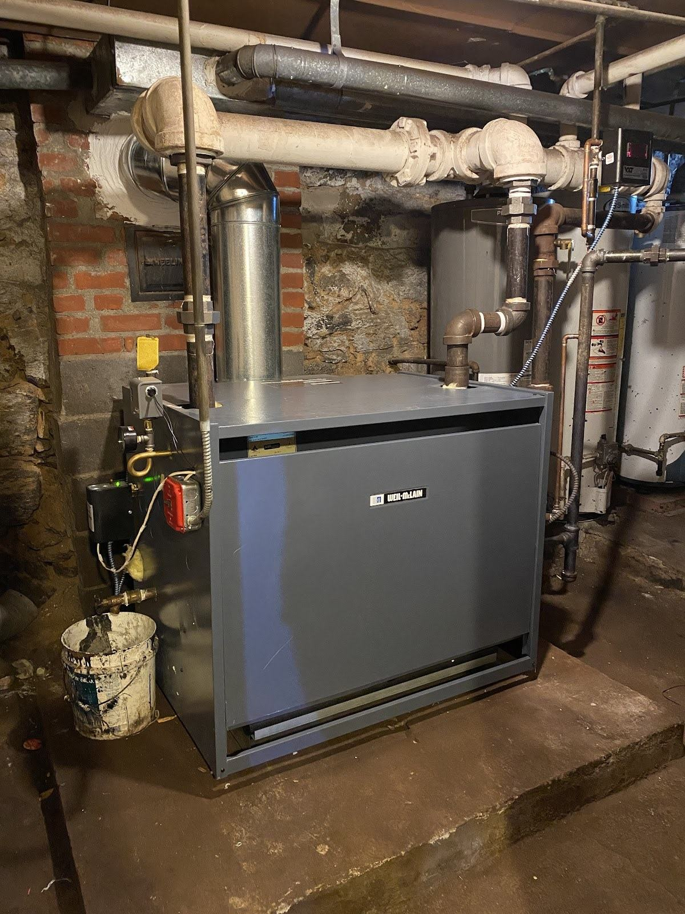

FLUSHING · QUEENS, NY
Plumbing &
heating in
Flushing.
Drains, pipework, water heaters and heating. Tell Tom’s what needs attention, and talk through the next step.
Find your service
PLUMBING & HEATING SERVICES
What needs
attention?
Start with the issue.
Choose a service to start a conversation.



HOW IT WORKS
From first call
to next step.
- 01
Call or message.
Tell us what’s happening and your Flushing location.
- 02
We take a look.
Discuss the equipment, pipework and scope of the issue.
- 03
You decide.
Ask your questions before choosing what happens next.
EQUIPMENT & PIPEWORK
The details
behind the service.
Supplied business photos.
Equipment and plumbing details.
SERVICE AREA
Flushing.
Queens, NY.
Ask Tom’s about drain cleaning, plumbing repair, water heaters or heating in Flushing.
Discuss your issue and locationBEFORE YOU CALL
A few useful
answers.
How do I ask for an estimate?
Call or send a message with the issue, the equipment involved and your neighborhood. Ask what information is needed to discuss an estimate.
What if I smell gas or have an urgent problem?
If you smell gas, suspect carbon monoxide or see smoke, leave the building and call 911 or your gas utility from outside. For a leak or loss of heat, avoid hazards and seek appropriate help; do not rely on this website in an emergency.
Which area can I ask about?
Ask about service in Flushing, Queens. Contact the business to confirm the location and scope of your request.
What should I put in a message?
Include your name, a way to reach you, your neighborhood and a short description of the issue. You can attach a clear equipment photo in your own messaging or email app. Avoid sensitive personal information.